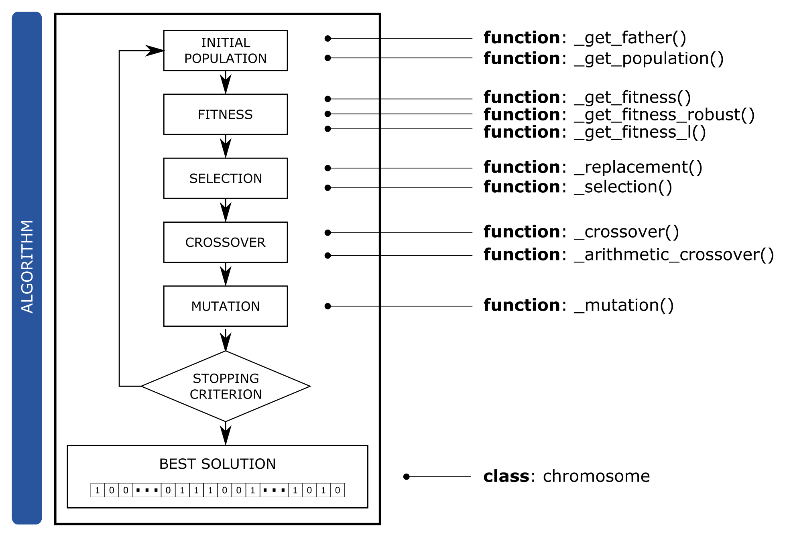

Introduction#
Nonalcoholic fatty liver disease (NAFLD) is a consequence of defects in diverse metabolic pathways or nutritional effects that involve a hepatic accumulation of triglycerides {cite}barr_obesity-dependent_2012. Features of these deviations might determine whether NAFLD progresses to nonalcoholic steatohepatitis (NASH). We investigated whether the diverse defects observed in patients with NAFLD are due to different NAFLD subtypes with specific serum metabolomic profiles and whether these can distinguish patients with NASH from patients with simple steatosis {cite}martinez-arranz_metabolomicbased_2018.
We collected liver and serum from several murine models, which have genetic alterations, nutritional alterations or both. I also analyzed serum metabolomes {cite}martinez-arranz_enhancing_2015 of 535 patients with biopsy-proven NAFLD (353 with simple steatosis and 182 with NASH) and compared them with serum metabolomes of these murine models {cite}barr_liquid_2010,alonso_metabolomic_2017,iruarrizaga-lejarreta_role_2017. In a previous analysis, we identified several subtypes of NAFLD using cluster analysis and we recognized markers that differentiate steatosis from NASH in each subtype.
In this study, a specific Genetic Algorithm (GA) has been developed to improve the identification of these subtypes in a human cohort and create a scalable methodology to identify subtypes of NAFLD. The final aim of this work is to develop a methodology for precision care in NAFLD.
The genetic algorithm has been developed in Python language and NumPy Style Python Docstrings12 has been used to document the package.
 Genetic algorithm schema and functions associated with each step.
-
INITIAL POPULATION/POPULATION
- _get_father(): See {ref}
tools:_get_fatherfunction. - _get_population(): See {ref}
tools:_get_populationfunction.
- _get_father(): See {ref}
-
FITNESS
- _get_fitness(): See {ref}
fitness:_get_fitnessfunction. - _get_fitness_robust(): See {ref}
fitness:_get_fitness_robustfunction. - _get_fitness_l(): See {ref}
fitness:_get_fitness_lfunction.
- _get_fitness(): See {ref}
-
SELECTION
- _selection(): See {ref}
operators:_selectionfunction.
- _selection(): See {ref}
-
CROSSOVER
- _crossover(): See {ref}
operators:_crossoverfunction. - _arithmetic_crossover(): See {ref}
operators:_arithmetic_crossoverfunction.
- _crossover(): See {ref}
-
MUTATION
- _mutation(): See {ref}
operators:_mutationfunction.
- _mutation(): See {ref}
 Genetic Algorithms Applied to Translational Strategy in NASH. Learning from Mouse Models. Poster presented in the II Jornadas Doctorales de la UPV/EHU 2019.
Genetic Algorithms Applied to Translational Strategy in NASH. Learning from Mouse Models. Poster presented in the II Jornadas Doctorales de la UPV/EHU 2019.
Bibliography#
{bibliography} bibliography/introduction.bib
:style: alpha # plain, unsrt, unsrtalpha